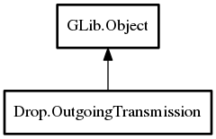

Drop.OutgoingTransmission – drop-1.0 Reference Manual
Packages
drop-1.0
Drop
OutgoingTransmission
interface_path
OutgoingTransmission
cancel
get_file_requests
get_is_secure
get_state
file_sent
progress_changed
protocol_failed
state_changed
OutgoingTransmission
Object Hierarchy:

Description:
public
class
OutgoingTransmission
:
Object
Namespace:
Drop
Package:
drop-1.0
Content:
Properties:
public
string
interface_path
{
construct
;
get
; }
Creation methods:
public
OutgoingTransmission
(
string
interface_path)
Methods:
public
OutgoingFileRequest
[]
get_file_requests
()
throws
IOError
public
void
cancel
()
throws
IOError
public
bool
get_is_secure
()
throws
IOError
public
ClientState
get_state
()
throws
IOError
Signals:
public
signal
void
protocol_failed
(
string
error_message)
public
signal
void
state_changed
(
ClientState
state)
public
signal
void
progress_changed
(
uint64
bytes_sent,
uint64
total_size)
public
signal
void
file_sent
(
uint
id)
Inherited Members:
All known members inherited from class GLib.Object
@new
newv
new_valist
get_type
get_class
@ref
unref
ref_sink
weak_ref
weak_unref
add_weak_pointer
remove_weak_pointer
@get
@set
get_property
set_property
get_data
set_data
set_data_full
steal_data
get_qdata
set_qdata
set_qdata_full
steal_qdata
freeze_notify
thaw_notify
dispose
constructed
notify_property
connect
disconnect
add_toggle_ref
remove_toggle_ref
bind_property
notify
ref_count